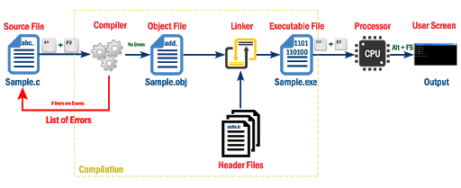
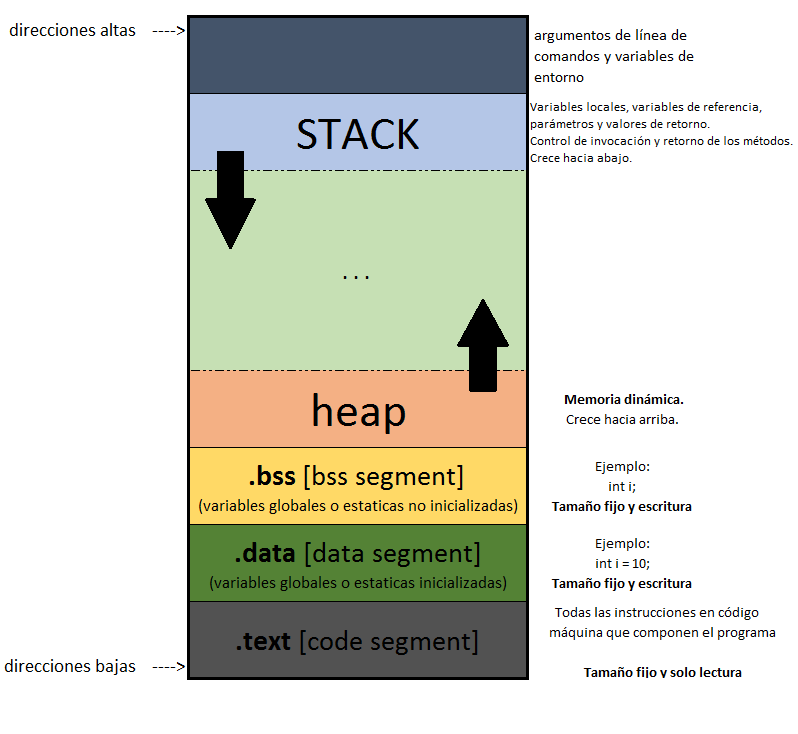

ELO320 - Estructuras de Datos y Algoritmos
Punteros
Marie González-Inostroza
Programa en Memoria
- Ejecutar: llevar un programa (binario) a memoria.
- Variables y Constantes: espacios que se asignan y liberan en memoria
- Ciclo de vida: cuándo se crea y destruye una variable
- Ámbito: qué código tiene acceso a la variable

Taxonomía de la memoria
Segmentos de memoria:

Taxonomía de la memoria
- Memoria text o de código
- Memoria static o estática
- Memoria heap
- Memoria stack o call stack
Memoria text
Donde el programa compilado se mantiene en memoria.
Memoria static
Mantiene variables globales y estáticas.
Ligado estático: variables (y valores) en la memoria hasta que programa termina.
Memoria heap
Permite al programador crear y eliminar objetos de memoria dinámicamente.
Son referenciadas indirectamente mediante punteros y/o referencias.
Memoria stack
Área dinámica de memoria donde se guardan las variables locales y la información de las funciones.
Objetos se asignan/liberan automáticamente en tiempo de ejecución.
Manejado automáticamente por el compilador.
Variables estáticas - static
long int y; // var global
static int z = 1; // global estatica;
// solo visible a este archivo.
int est3_st4tic(){
static int a=0; // local estatica
a++; // no pierde su valor al finalizar ámbito
return a;
}
int fun() {
int i;
for(i=0;i<10;i++){
printf("vuelta numero %d\n", i);
printf("pero no pierde su valor: %d\n", est3_st4tic());
}
return 0;
}
Dirección de Memoria o Referencia
- Las variables de stack son cajones que pueden guardar valores.
#include
int main(){
int b;
scanf("%d", &b); // ¿Por qué &b?
return 0;
}
El operador & nos entrega la ubicación de memoria donde se encuentra el cajón.
Analogía - Biblioteca

- Valor 320 como identificador del libro.
pu → casillero.&pu → ubicación casillero → pasillo 3, estante 2, fila 4.
Punteros en C
int utfsm1 = 1680;
int utfsm2 = 3939;
int *dir = NULL; // puntero a int
dir = &utfsm1;
printf("Dirección dentro de dir: %p\n", dir);
printf("Valor dir: %d\n", *dir);
printf("Dirección de dir: %p\n", &dir);
Aritmética de Punteros
- Indicar el tipo a un puntero sirve para realizar aritmética de punteros.
- Transforma 1 unidad decimal en 1 unidad según el tamaño del tipo.
- Podemos saber cuánta memoria hay entre un puntero y el siguiente (si existe).
- Ejemplo: puntero a int avanza de a 4 bytes.
float num = 2.5;
float *f;
f = # //Dirección a num.
printf("Direccion f: %p\n", f); //¿Cuál es la diferencia
printf("Direccion f+1: %p\n", f+1); //entre f y f+1?
Respuesta: La diferencia es de 4 bytes (tamaño de float).
Arreglos y Aritmética de Punteros
- En C un arreglo puede trabajarse con aritmética de punteros.
- Los arreglos son compatibles con punteros.
- El compilador hace coerción y esto permite la aritmética de punteros.
int a[10], i;
int *pa, *pb;
pa = &a[0]; /* dir. elemento 0 de arreglo a */
pa = a; /* lo mismo con coerción */
pb = &a; /* dir. de arreglo a. tamaño 10 int */
for (i=0; i<10; i++){
printf("%d ", a[i]);
printf("%d ", *(pa+i));
printf("%d ", *(a+i));
}
printf("%d ", *(pb+1)); //¿Qué pasa acá?
Funciones y Punteros: Paso por Valor
- Los parámetros copian los valores que fueron pasados como parámetros.
- Las variables originales se mantienen inalteradas.
#include
void swap(int a, int b){
int temp;
temp = a;
a = b;
b = temp;
}
int main(){
int x=2, y=3;
swap(x,y);
printf("x: %d, y: %d\n", x, y); //¿Qué imprime?
return 0;
}
Funciones y Punteros: Paso por Referencia
- Los parámetros son punteros locales, pero la desreferencia apunta a la misma variable.
- Las variables originales se modifican.
#include
void swap(int *a, int *b){
int temp;
temp = *a;
*a = *b;
*b = temp;
}
int main(){
int x=2, y=3;
swap(&x,&y);
printf("x: %d, y: %d\n", x, y); //¿Qué imprime?
return 0;
}
Funciones y Punteros: Paso por Referencia (Caso 3)
- ¿Funciona este tercer caso?
#include
void swap(int *a, int *b){
int *temp;
temp = a;
a = b;
b = temp;
}
int main(){
int x=2, y=3;
swap(&x,&y);
printf("x: %d, y: %d\n", x, y); //¿Qué imprime?
return 0;
}
Respuesta: No, no funciona. Punteros locales.
Funciones y Punteros: Paso por Referencia (Caso 4)
- ¿Funciona este cuarto caso?
#include
void swap(int *a, int *b){
int *temp;
temp = a;
*a = *b;
*b = *temp;
}
int main(){
int x=2, y=3;
swap(&x,&y);
printf("x: %d, y: %d\n", x, y); //¿Qué imprime?
return 0;
}
Respuesta: No, se pierde el valor de *a.
Actividad 4.2: Strings y Structs en C
Completa las funciones para buscar en un arreglo de Structs.
El código base está en Classroom. Completa las funciones vacías y realiza pruebas con distintos
valores.
https://classroom.github.com/a/OQ7AZUuO